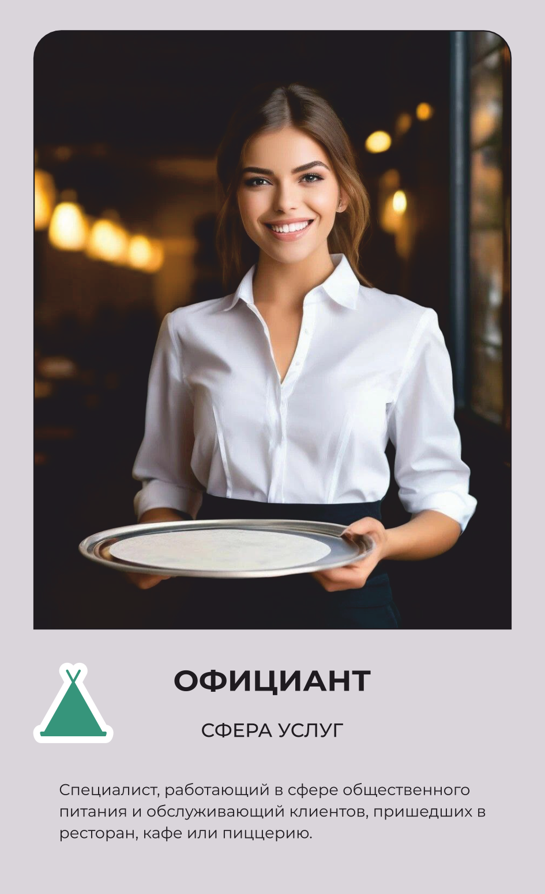

Официант
Принимает заказ и ведёт гостя весь визит.
Основной вид деятельности
Встречает гостей кафе или ресторана, помогает выбрать блюдо и обслуживает столик на протяжении визита.
Что делает на рабочем месте
Официант встречает гостей за столиком, предлагает меню и помогает определиться с выбором, рассказывая, из каких продуктов готовится блюдо и насколько оно острое, сытное или калорийное. Принимает заказ, передаёт его на кухню и следит, чтобы блюда и напитки подавались в правильном порядке и без задержек. Разносит заказы на подносе, аккуратно расставляя тарелки, и следит, чтобы у гостей не заканчивались напитки или столовые приборы. По ходу визита отвечает на вопросы, решает мелкие проблемы — например, если блюдо оказалось не тем, что заказывали, — и в конце подаёт счёт в специальной папке. Следит за чистотой и порядком за своими столами, вовремя убирая использованную посуду и меняя приборы для нового гостя. Работает в форменной рубашке или блузе с фартуком, в обуви на нескользящей подошве, потому что весь день проводит на ногах между кухней и залом.
Что производит
Принимают заказы, подают блюда и напитки, консультируют клиентов по меню, обслуживают столы и обеспечивают чистоту и порядок на территории заведения.
Оборудование и инструменты
Спецодежда и СИЗ
одежды
рубашки, блузы либо футболки в корпоративных оттенках, а также брюк или юбки, обычно темных. Дополняет образ практичный фартук: это модели из плотного материала, которые предусматривают поясной вариант либо нагрудник.
Спецобувь
обуви
текстильные или текстильно-комбинированные туфли, тапочки и ботинки, изготовленные на нескользящей подошве.
Где учиться
43.01.01 Официант, бармен
Где работать
Похожие профессии
Данные — карточка 112 из 160, отрасль «Туризм и сфера услуг». Зарплата — оценочная вилка по региону.